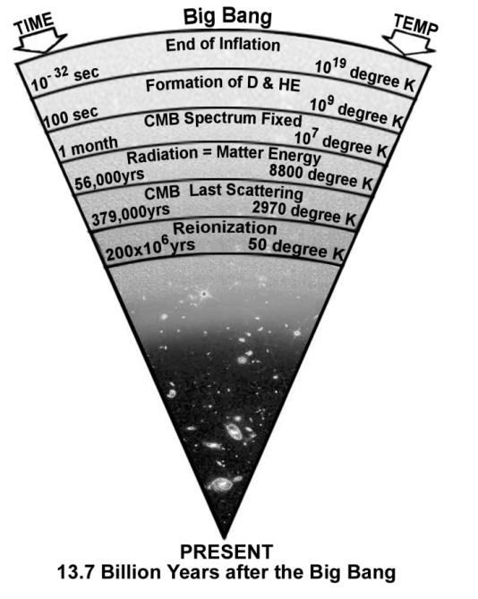
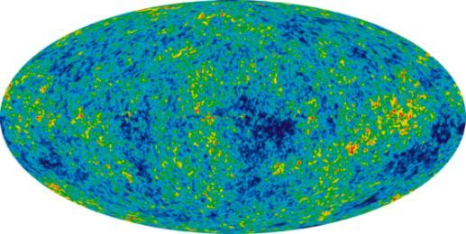
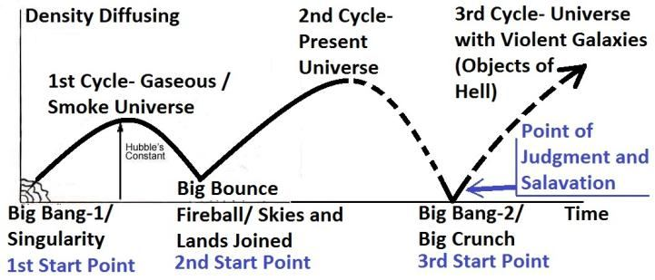

―Do they not observe the birds above them, spreading and folding? None can hold them except (God) Most Gracious. Truly, it is He that watches over all things.‖ [Al Quran 67:19] Gravity holds a flying bird through its center of gravity (CG); otherwise, the bird could not fly, as it would be weightless, unbalanced, and thrown off course. The verses above state: "Nothing holds them but Allah," indicating that gravitational force is a force of Allah. The following verses convey the same indication:
- তারা কি তাদের উপরে ছড়িয়ে থাকা এবং ভাঁজ করা পাখিদের লক্ষ্য করে না? পরম করুণাময় আল্লাহ ব্যতীত তাদের কেউ ধরে রাখতে পারে না। প্রকৃতপক্ষে, তিনিই সমস্ত কিছুর উপর নজরদারি করেন।'' [আল কুরআন 67:19] মাধ্যাকর্ষণ একটি উড়ন্ত পাখিকে তার মাধ্যাকর্ষণ কেন্দ্রে (সিজি) ধরে রাখে; অন্যথায়, পাখিটি উড়তে পারত না, কারণ এটি ওজনহীন, ভারসাম্যহীন এবং নিক্ষিপ্ত হবে। উপরের আয়াতগুলি বলে: "আল্লাহ ছাড়া আর কিছুই তাদের ধারণ করে না," ইঙ্গিত করে যে মাধ্যাকর্ষণ শক্তি আল্লাহর একটি শক্তি। নিম্নলিখিত আয়াতগুলি একই ইঙ্গিত বহন করে:
―He covers the night with the day, seeking it rapidly, and the sun and the moon and the stars controlled by His deed.‖[Al Quran 7:54]
"তিনি রাতকে দিনের দ্বারা ঢেকে দেন, দ্রুততার সাথে তালাশ করেন এবং সূর্য, চন্দ্র ও নক্ষত্রগুলিকে তাঁর কর্ম দ্বারা নিয়ন্ত্রিত করেন।" [আল কুরআন 7:54]
―That is because God merges night into day, and He merges day into night, and verily it is God Who hears and sees.‖ [Al Quran 22:61]
"এটা এজন্য যে, আল্লাহ রাত্রিকে দিনে মিশে যান এবং তিনি দিনকে রাত্রিতে মিশ্রিত করেন এবং নিশ্চয়ই আল্লাহ শোনেন ও দেখেন।" [আল কুরআন 22:61]
―It is He Who gives life and death, and to Him is the alternation of Night and Day; will ye not then understand?‖ [Al Quran 23:80]
তিনিই জীবন ও মৃত্যু দান করেন এবং রাত ও দিনের পরিবর্তন তাঁরই কাছে; তবুও কি তোমরা বুঝবে না?'' [আল কুরআন 23:80]
―It is God Who alternates the Night and the Day; verily in these things is an instructive example for those who have vision!‖ [Al Quran 24:44]
- আল্লাহই রাত ও দিনের পরিবর্তন করেন; নিঃসন্দেহে এই জিনিসগুলোর মধ্যে রয়েছে দৃষ্টিশক্তিসম্পন্নদের জন্য একটি শিক্ষণীয় উদাহরণ!'' [আল কুরআন 24:44]
The sun, the moon and the stars are controlled by His deeds. He rotates the Earth to cause the day and night. So, the gravitational force is His force. A force field in a living entity (Allah) should be called soul (ruh). The soul is deliberately discussed in Chapter-1. To recapitulate, a ruh is an elementary force field that works as a command in the nature. And a nafs is a composite soul, created from two or more ruhs (force fields), which sustains a living / nonliving system. The force fields that produce the nafses (souls) of living creatures are different in nature and yet to be discovered. Like a human, Allah too has a nafs permeating His body in form. Allah in form normally stays in the Arsh. The gravitational force working in this universe (Samawaat) is a ruh that is extended from His body in form through the hand of His nafs. The Samawaat is in the right hand of His nafs. Allah is deliberately discussed in Chapter-1.
সূর্য, চন্দ্র ও নক্ষত্র তাঁর কর্ম দ্বারা নিয়ন্ত্রিত। তিনি দিন এবং রাত্রি ঘটাতে পৃথিবী ঘোরেন। সুতরাং, মহাকর্ষ বল হল তাঁর বল। জীবিত সত্তার (আল্লাহ) একটি শক্তি ক্ষেত্রকে আত্মা (রুহ) বলা উচিত। আত্মাকে উদ্দেশ্যমূলকভাবে অধ্যায়-১ এ আলোচনা করা হয়েছে। পুনর্ব্যক্ত করার জন্য, একটি রুহ হল একটি প্রাথমিক বল ক্ষেত্র যা প্রকৃতিতে একটি কমান্ড হিসাবে কাজ করে। এবং একটি নফস হল একটি যৌগিক আত্মা, যা দুই বা ততোধিক রুহ (বল ক্ষেত্র) থেকে সৃষ্ট, যা একটি জীবন্ত/অজীবত ব্যবস্থাকে টিকিয়ে রাখে। যে শক্তি ক্ষেত্রগুলি জীবিত প্রাণীদের নফসেস (আত্মা) উত্পাদন করে তা প্রকৃতিতে ভিন্ন এবং এখনও আবিষ্কার করা হয়নি। মানুষের মতো আল্লাহরও একটি নফস রয়েছে যা তার শরীরে আকারে বিস্তৃত। আল্লাহ সাধারণত আরশে থাকেন। এই মহাবিশ্বে কাজ করা মহাকর্ষীয় শক্তি (সামাওয়াত) একটি রুহ যা তাঁর নফসের হাতের মাধ্যমে তাঁর শরীর থেকে আকারে প্রসারিত হয়। সামাওয়াত তাঁর নফসের ডান হাতে। অধ্যায়-১ এ আল্লাহকে ইচ্ছাকৃতভাবে আলোচনা করা হয়েছে।
Note:
দ্রষ্টব্য:
Do not mix up creation with Allah. Allah sustains creations by the hands of His nafs. He infused the right hand of His nafs into this universe (Samawaat) and the left hand into the Arsh and Jannaat as parts of the process of istawa. His hands comprise various forces (ruhs), such as gravitational force, quantum force fields, and others. The forces within His hands of nafs are designed to operate in fixed patterns, making their effects appear as natural laws. On the other hand, creations—such as atomic forces, fundamental subatomic particles, and the nafses of living creatures—originated from Nafsin- Wahidatin (a Single Soul) that Allah provided (breathed out) and transformed into various forms of creation. Allah also has a form, which resembles that of a human. In this form, Allah has hands. The hands of His nafs are additional hands and vast—so vast that the entire universe rests on the palm of His right hand. Allah is deliberately discussed in Chapter-1.
সৃষ্টিকে আল্লাহর সাথে মিশিয়ে দিও না। আল্লাহ তার নফসের হাতে সৃষ্টিকে টিকিয়ে রাখেন। তিনি তাঁর নফসের ডান হাতকে এই মহাবিশ্বে (সামাওয়াত) এবং বাম হাতটি আরশ ও জান্নাতে ইস্তিওয়া প্রক্রিয়ার অংশ হিসাবে প্রবেশ করান। তার হাতে বিভিন্ন শক্তি (ruhs), যেমন মহাকর্ষীয় বল, কোয়ান্টাম বল ক্ষেত্র এবং অন্যান্য। তাঁর হাতের নফসের শক্তিগুলি নির্দিষ্ট প্যাটার্নে কাজ করার জন্য ডিজাইন করা হয়েছে, যার প্রভাবগুলি প্রাকৃতিক নিয়ম হিসাবে প্রদর্শিত হবে। অন্যদিকে, সৃষ্টি- যেমন পারমাণবিক শক্তি, মৌলিক উপ-পরমাণু কণা এবং জীবিত প্রাণীর নফসিস-আল্লাহ প্রদত্ত নফসিন-ওয়াহিদাতিন (একটি একক আত্মা) থেকে উদ্ভূত হয়েছে এবং সৃষ্টির বিভিন্ন রূপে রূপান্তরিত হয়েছে। আল্লাহরও একটি রূপ আছে, যা মানুষের মতো। এই রূপে আল্লাহর হাত আছে। তাঁর নফসের হাত অতিরিক্ত হস্ত এবং প্রশস্ত-এত প্রশস্ত যে সমগ্র বিশ্বজগৎ তাঁর ডান হাতের তালুতে বিরাজমান। অধ্যায়-১ এ আল্লাহকে ইচ্ছাকৃতভাবে আলোচনা করা হয়েছে।
Matter is devotedly obedient to the forces of His hands (the hands of nafs)—matter moves in willing obedience, which manifests as the inertia of motion:
বস্তু তাঁর হাতের (নফসের হাত) শক্তির প্রতি একনিষ্ঠভাবে আনুগত্য করে - বস্তু স্বেচ্ছায় আনুগত্যে চলে, যা গতির জড়তা হিসাবে প্রকাশ পায়:
―Moreover, istawa the Sky (by infusing His force / gravitational force) while it had been smoke. He said to it (smoke) and to the lands (formed after His istawa), ―Come ye together, willingly or unwillingly.‖ They said, ―We do come in willing obedience.‖ [Al Quran 41:11]
- তাছাড়া, ইস্তওয়া দ্য স্কাই (তাঁর বল/মাধ্যাকর্ষণ শক্তি প্রয়োগ করে) যখন এটি ধোঁয়া ছিল। তিনি এটিকে (ধোঁয়া) এবং (তাঁর ইস্তেওয়াতের পরে গঠিত) জমিগুলিকে বললেন, "তোমরা স্বেচ্ছায় বা অনিচ্ছায় একত্র হও।" তারা বলল, "আমরা স্বেচ্ছায় আনুগত্য নিয়ে এসেছি।" [আল কুরআন 41:11]
Scientists believe that gravity is not powerful enough to initiate the contraction of the universe. However, gravity is a force of Allah, invested through the hand of His nafs, which He can strengthen or weaken. Similarly, dark energy, driving the expansion of the universe, is also a force of Allah. Allah is all-powerful over everything in the universe, and He can initiate the contraction at any time. However, Allah has designed the universe to follow a predetermined course, leading to its eventual collapse and revival—where all events occur on a single time-scale. Therefore, scientific understanding of Resurrection, Judgment, Salvation or Peril can help us recognize where and how these processes are embedded in the evolution of the universe. 5. Scientific Thought on Expansion or Contraction
বিজ্ঞানীরা বিশ্বাস করেন যে মহাকর্ষ মহাবিশ্বের সংকোচন শুরু করার জন্য যথেষ্ট শক্তিশালী নয়। যাইহোক, মাধ্যাকর্ষণ আল্লাহর একটি শক্তি, যা তাঁর নফসের হাত দিয়ে বিনিয়োগ করা হয়, যা তিনি শক্তিশালী বা দুর্বল করতে পারেন। একইভাবে, অন্ধকার শক্তি, মহাবিশ্বের সম্প্রসারণকে চালিত করে, এটিও আল্লাহর একটি শক্তি। আল্লাহ মহাবিশ্বের সবকিছুর উপর সর্বশক্তিমান, এবং তিনি যে কোন সময় সংকোচন শুরু করতে পারেন। যাইহোক, আল্লাহ মহাবিশ্বকে একটি পূর্বনির্ধারিত পথ অনুসরণ করার জন্য ডিজাইন করেছেন, যা এর চূড়ান্ত পতন এবং পুনরুজ্জীবনের দিকে পরিচালিত করে- যেখানে সমস্ত ঘটনা একক সময়-স্কেলে ঘটে। অতএব, পুনরুত্থান, বিচার, পরিত্রাণ বা বিপদ সম্পর্কে বৈজ্ঞানিক উপলব্ধি আমাদের চিনতে সাহায্য করতে পারে কোথায় এবং কীভাবে এই প্রক্রিয়াগুলি মহাবিশ্বের বিবর্তনে এমবেড করা হয়েছে। 5. সম্প্রসারণ বা সংকোচনের উপর বৈজ্ঞানিক চিন্তাধারা
―Will the universe expand forever, or it will collapse again? The answer to this question depends critically on the amount of matter in this universe. If the density at present is more than 10-29 grams per cc, then scientists calculate that there is enough matter in the universe to overcome by gravitational attraction the present expansion, and the universe will eventually collapse again to another state of Singularity. If the density is less than that value, the universe will continue to expand forever. We do not know the answer yet.‖ – Dawn of a New Era by Sir Bernard Lovell in The Encyclopedia of Space Travel and Astronomy edited by John Man. -29 The density of 10 grams per cubic centimeter is known as the critical density. To calculate density, both volume and mass are required. The volume of the universe remains unknown, as no boundary has been detected in any direction. Therefore, scientists estimate the likely density by counting the number of galaxies within a specific volume of space. This estimated density is significantly lower than what would be needed to close the universe. However, there may be invisible dark matter at the outside of the galaxies, which are undetectable. Dark Matter has gravitational influence on visible matter. ―We are not going to find any less matter in the universe, while there might well be material we don‘t yet know about – cold gas between the galaxies, for instance, or black holes at present undetected. So even now the two versions of the fate of the universe should be given equally serious considerations.‖ – To the Edge of Eternity by John Gribbin in The Encyclopedia of Space Travel and Astronomy edited by John Man The most promising dark matter that can provide enough mass to collapse the universe is neutrino. Previously it was thought to have no mass. In 1998, it has been discovered that the neutrinos possess mass. It indicates that the universe has just enough mass to stop it from expanding forever. Therefore, the scientists cannot identify the ultimate model of the universe. They propose several possible models, as discussed in Series 1, 2, and 3.
- মহাবিশ্ব কি চিরতরে প্রসারিত হবে, নাকি এটি আবার ধসে পড়বে? এই প্রশ্নের উত্তর এই মহাবিশ্বে পদার্থের পরিমাণের উপর সমালোচনামূলকভাবে নির্ভর করে। যদি বর্তমানে ঘনত্ব প্রতি সিসি প্রতি 10-29 গ্রামের বেশি হয়, তাহলে বিজ্ঞানীরা গণনা করেন যে মহাবিশ্বে মহাকর্ষীয় আকর্ষণ দ্বারা বর্তমান সম্প্রসারণকে অতিক্রম করার জন্য পর্যাপ্ত পদার্থ রয়েছে এবং মহাবিশ্ব শেষ পর্যন্ত আবার সিঙ্গুলারিটির অন্য অবস্থায় ভেঙে পড়বে। ঘনত্ব সেই মানের থেকে কম হলে মহাবিশ্ব চিরকাল প্রসারিত হতে থাকবে। আমরা এখনও উত্তর জানি না।'' - জন ম্যান সম্পাদিত দ্য এনসাইক্লোপিডিয়া অফ স্পেস ট্রাভেল অ্যান্ড অ্যাস্ট্রোনমি-তে স্যার বার্নার্ড লাভেলের লেখা ডন অফ এ নিউ এরা। -29 প্রতি ঘন সেন্টিমিটারে 10 গ্রাম ঘনত্বকে সমালোচনামূলক ঘনত্ব বলা হয়। ঘনত্ব গণনা করতে, আয়তন এবং ভর উভয়ই প্রয়োজন। মহাবিশ্বের আয়তন অজানা রয়ে গেছে, কারণ কোন দিকে কোন সীমানা সনাক্ত করা যায়নি। অতএব, বিজ্ঞানীরা একটি নির্দিষ্ট আয়তনের স্থানের মধ্যে গ্যালাক্সির সংখ্যা গণনা করে সম্ভাব্য ঘনত্ব অনুমান করেন। এই আনুমানিক ঘনত্ব মহাবিশ্বকে বন্ধ করার জন্য যা প্রয়োজন হবে তার থেকে উল্লেখযোগ্যভাবে কম। যাইহোক, গ্যালাক্সির বাইরে অদৃশ্য অন্ধকার পদার্থ থাকতে পারে, যা সনাক্ত করা যায় না। ডার্ক ম্যাটার দৃশ্যমান পদার্থের উপর মহাকর্ষীয় প্রভাব ফেলে। - আমরা মহাবিশ্বে কোনও কম পদার্থ খুঁজে পাব না, যদিও এমন উপাদান থাকতে পারে যা আমরা এখনও জানি না - গ্যালাক্সিগুলির মধ্যে ঠান্ডা গ্যাস, উদাহরণস্বরূপ, বা ব্ল্যাক হোল বর্তমানে সনাক্ত করা যায়নি। সুতরাং এখনও মহাবিশ্বের ভাগ্যের দুটি সংস্করণকে সমানভাবে গুরুত্ব সহকারে বিবেচনা করা উচিত।'' - জন গ্রিবিন দ্বারা দ্য এনসাইক্লোপিডিয়া অফ স্পেস ট্রাভেল অ্যান্ড অ্যাস্ট্রোনমিতে জন ম্যান দ্বারা সম্পাদিত সবচেয়ে প্রতিশ্রুতিশীল অন্ধকার পদার্থ যা মহাবিশ্বকে ধ্বংস করার জন্য যথেষ্ট ভর সরবরাহ করতে পারে তা হল নিউট্রিনো। আগে মনে করা হতো এর কোনো ভর নেই। 1998 সালে, এটি আবিষ্কৃত হয়েছে যে নিউট্রিনোগুলির ভর রয়েছে। এটি ইঙ্গিত দেয় যে মহাবিশ্বে এটিকে চিরতরে প্রসারিত হওয়া থেকে থামানোর জন্য যথেষ্ট ভর রয়েছে। অতএব, বিজ্ঞানীরা মহাবিশ্বের চূড়ান্ত মডেল সনাক্ত করতে পারে না। সিরিজ 1, 2, এবং 3 এ আলোচনা করা হয়েছে বলে তারা বেশ কয়েকটি সম্ভাব্য মডেলের প্রস্তাব করে।
6. Confirmation of the Flat Universe Model
6. ফ্ল্যাট ইউনিভার্স মডেলের নিশ্চিতকরণ
The Flat Universe is the dividing line between the Open Universe and the Closed Universe. There is either just enough matter to ‗close‘ the universe and make it eventually collapse, or there is not quite enough so that it will expand forever. Most scientists support the Flat Universe model based on observations of space curvature caused by light from extremely distant superstructures, such as walls comprising hundreds of thousands of galaxies. According to Einstein‘s Theory of Relativity, the presence of matter curves space-time. This is confirmed by observation: light passing near a massive object bends. If the distribution of matter is uniform and isotropic in the universe, the overall space may be Positively Curved, Negatively Curved, or Flat. FIGURE 21.19: Curvature of Overall Universe

চিত্র 21_19 / Figure 21_19
সমতল মহাবিশ্ব হল উন্মুক্ত মহাবিশ্ব এবং বন্ধ মহাবিশ্বের মধ্যে বিভাজন রেখা। হয় মহাবিশ্বকে 'বন্ধ' করার জন্য এবং এটিকে শেষ পর্যন্ত ভেঙে ফেলার জন্য যথেষ্ট পরিমাণে যথেষ্ট বিষয় রয়েছে, বা এটি চিরতরে প্রসারিত হওয়ার জন্য যথেষ্ট পরিমাণে নেই। বেশিরভাগ বিজ্ঞানীরা ফ্ল্যাট ইউনিভার্স মডেলকে সমর্থন করেন যা অত্যন্ত দূরবর্তী সুপারস্ট্রাকচার থেকে আলোর কারণে সৃষ্ট মহাকাশের বক্রতা পর্যবেক্ষণের উপর ভিত্তি করে, যেমন শত সহস্র গ্যালাক্সির দেয়াল। আইনস্টাইনের আপেক্ষিক তত্ত্ব অনুসারে, পদার্থের উপস্থিতি স্থান-কালকে বক্র করে। এটি পর্যবেক্ষণ দ্বারা নিশ্চিত করা হয়েছে: একটি বিশাল বস্তুর কাছাকাছি আলো বাঁকে। যদি মহাবিশ্বে পদার্থের বণ্টন অভিন্ন এবং আইসোট্রপিক হয়, তাহলে সামগ্রিক স্থানটি ইতিবাচকভাবে বাঁকা, নেতিবাচকভাবে বাঁকা বা সমতল হতে পারে। চিত্র 21.19: সামগ্রিক মহাবিশ্বের বক্রতা
চিত্র 21_19 / Figure 21_19
The space of a Positively Curved Universe is bent round onto itself. The light travelling in an apparently straight line will return to the point of origin. This space is similar to the surface of the Earth, where moving in a straight line eventually brings one back to the starting point. A Positively Curved Universe is closed and will ultimately collapse. If the overall space is Negatively Curved, it is like the saddle of a horse. Light follows a parabolic path. The Negatively Curved Universe is open; it will expand forever. Space may also be flat, in which case light follows a straight path. No reliable method to measure the distance of a far- off object has been discovered so far. Galaxies at very large distances are not even visible. So, it is not possible to find out the distribution of matter by direct method and understand the likely curvature of space. However, scientists have created a map of the early universe using the Cosmic Microwave Background Radiation (CMBR). By comparing the lateral dispersion of concentrations in the 'distant microwave sky' with those in the 'distant real sky,' they have determined that the geometry of space is flat. The Big Bang left behind a residue of radio noise, known today as Cosmic Microwave Background Radiation (CMB). The Wilkinson Microwave Anisotropy Probe (WMAP), launched by NASA, collected CMB data in the 2010s. Equipped with advanced instruments to detect minor fluctuations in the radiation, the probe produced a detailed map of the early universe. The pattern of the CMB reveals the physical conditions of the universe during the epoch of CMB Last Scattering, when the universe was 379,000 years old.
একটি ইতিবাচকভাবে বাঁকা মহাবিশ্বের স্থানটি নিজের দিকে বৃত্তাকারভাবে বাঁকানো। একটি আপাত সরল রেখায় ভ্রমণ করা আলো মূল বিন্দুতে ফিরে আসবে। এই স্থানটি পৃথিবীর পৃষ্ঠের অনুরূপ, যেখানে একটি সরলরেখায় চললে অবশেষে একটিকে আবার শুরু বিন্দুতে নিয়ে আসে। একটি ইতিবাচকভাবে বাঁকা মহাবিশ্ব বন্ধ এবং শেষ পর্যন্ত ধসে পড়বে। যদি সামগ্রিক স্থানটি নেতিবাচকভাবে বাঁকা হয় তবে এটি ঘোড়ার জিনের মতো। আলো একটি প্যারাবোলিক পথ অনুসরণ করে। নেতিবাচকভাবে বাঁকা মহাবিশ্ব উন্মুক্ত; এটা চিরতরে প্রসারিত হবে। স্থান সমতলও হতে পারে, এই ক্ষেত্রে আলো একটি সরল পথ অনুসরণ করে। দূরের বস্তুর দূরত্ব পরিমাপের কোনো নির্ভরযোগ্য পদ্ধতি এখন পর্যন্ত আবিষ্কৃত হয়নি। খুব বড় দূরত্বের গ্যালাক্সিগুলিও দৃশ্যমান নয়। সুতরাং, সরাসরি পদ্ধতিতে পদার্থের বন্টন খুঁজে বের করা এবং স্থানের সম্ভাব্য বক্রতা বোঝা সম্ভব নয়। যাইহোক, বিজ্ঞানীরা কসমিক মাইক্রোওয়েভ ব্যাকগ্রাউন্ড রেডিয়েশন (CMBR) ব্যবহার করে আদি মহাবিশ্বের একটি মানচিত্র তৈরি করেছেন। 'দূরবর্তী মাইক্রোওয়েভ আকাশে' ঘনত্বের পার্শ্বীয় বিচ্ছুরণকে 'দূরবর্তী বাস্তব আকাশে'র সাথে তুলনা করে, তারা নির্ধারণ করেছে যে স্থানের জ্যামিতি সমতল। বিগ ব্যাং রেডিও শব্দের অবশিষ্টাংশ রেখে গেছে, যা আজ কসমিক মাইক্রোওয়েভ ব্যাকগ্রাউন্ড রেডিয়েশন (সিএমবি) নামে পরিচিত। উইলকিনসন মাইক্রোওয়েভ অ্যানিসোট্রপি প্রোব (WMAP), NASA দ্বারা চালু করা, 2010-এর দশকে CMB ডেটা সংগ্রহ করেছিল। বিকিরণের ছোটখাট ওঠানামা শনাক্ত করার জন্য উন্নত যন্ত্র দিয়ে সজ্জিত, প্রোবটি প্রাথমিক মহাবিশ্বের একটি বিশদ মানচিত্র তৈরি করেছে। সিএমবি-র প্যাটার্নটি সিএমবি লাস্ট স্ক্যাটারিংয়ের যুগে মহাবিশ্বের ভৌত অবস্থা প্রকাশ করে, যখন মহাবিশ্বের বয়স ছিল 379,000 বছর।
FIGURE 21.20: CMB Last Scattering

চিত্র 21_20 / Figure 21_20
চিত্র 21.20: CMB লাস্ট স্ক্যাটারিং
চিত্র 21_20 / Figure 21_20
The map shows temperature fluctuations, which contain information about the total energy density and curvature of the universe. Tiny variations in temperature correspond to the distribution of matter. These irregularities eventually formed galaxies and clusters of galaxies.
মানচিত্রটি তাপমাত্রার ওঠানামা দেখায়, যা মহাবিশ্বের মোট শক্তি ঘনত্ব এবং বক্রতা সম্পর্কে তথ্য ধারণ করে। তাপমাত্রার ক্ষুদ্র পরিবর্তনগুলি পদার্থের বন্টনের সাথে মিলে যায়। এই অনিয়মগুলি অবশেষে গ্যালাক্সি এবং গ্যালাক্সির ক্লাস্টার তৈরি করেছিল।
FIGURE 21.21: CMB Map of the Universe

চিত্র 21_21 / Figure 21_21
চিত্র 21.21: মহাবিশ্বের CMB মানচিত্র
চিত্র 21_21 / Figure 21_21
It shows that the universe is composed of 4.6% matter, 24% dark matter, and 71.4% dark energy. The lateral dispersion of an extremely distant concentration is observed on the map, and the same concentration is seen in the real sky today. This comparison shows that light has traveled along a straight path. Therefore, scientists conclude that the space of the universe is flat.
এটি দেখায় যে মহাবিশ্ব 4.6% পদার্থ, 24% অন্ধকার পদার্থ এবং 71.4% অন্ধকার শক্তি দ্বারা গঠিত। একটি অত্যন্ত দূরবর্তী ঘনত্বের পার্শ্বীয় বিচ্ছুরণ মানচিত্রে পরিলক্ষিত হয় এবং একই ঘনত্ব আজ বাস্তব আকাশে দেখা যায়। এই তুলনা দেখায় যে আলো একটি সরল পথ ধরে ভ্রমণ করেছে। অতএব, বিজ্ঞানীরা উপসংহারে পৌঁছেছেন যে মহাবিশ্বের স্থান সমতল।
Note:
দ্রষ্টব্য:
The result would be the same in a well organized seven-sky-universe, because we are in the central region.
ফলাফল একটি সুসংগঠিত সাত-আকাশ-মহাবিশ্বে একই হবে, কারণ আমরা মধ্য অঞ্চলে আছি।
Moreover, in the 1990s, the 1A Supernova Cosmological Project and the High-Z Search Team discovered that the expansion rate of the universe has been accelerating for the last five billion years. A universe with a fluctuating rate of expansion should be flat. However, several aspects of the CMB data suggest that the universe is not flat but closed. The lensing of the CMB indicates that the universe may be denser than the critical density, causing gravity to dominate and the universe to collapse in on itself.
অধিকন্তু, 1990-এর দশকে, 1A সুপারনোভা কসমোলজিক্যাল প্রজেক্ট এবং হাই-জেড অনুসন্ধান দল আবিষ্কার করেছে যে মহাবিশ্বের সম্প্রসারণের হার গত পাঁচ বিলিয়ন বছর ধরে ত্বরান্বিত হচ্ছে। সম্প্রসারণের ওঠানামা করার হার সহ একটি মহাবিশ্ব সমতল হওয়া উচিত। যাইহোক, CMB ডেটার বিভিন্ন দিক নির্দেশ করে যে মহাবিশ্ব সমতল নয় বরং বন্ধ। CMB এর লেন্সিং ইঙ্গিত দেয় যে মহাবিশ্ব সমালোচনামূলক ঘনত্বের চেয়ে ঘন হতে পারে, যার ফলে মহাকর্ষ আধিপত্য বিস্তার করে এবং মহাবিশ্ব নিজেই ভেঙে পড়ে।
7. Model of the Universe in the Quran
7. কুরআনে মহাবিশ্বের মডেল
According to the Quran, the universe is cyclic, and it was created by Allah in the preceding cycle (1st Cycle).
কুরআন অনুসারে, মহাবিশ্ব চক্রাকার, এবং এটি পূর্ববর্তী চক্রে (১ম চক্র) আল্লাহ দ্বারা সৃষ্টি করা হয়েছে।
FIGURE 21.22: The Quran‘s Model of the Universe

চিত্র 21_22 / Figure 21_22
চিত্র 21.22: মহাবিশ্বের কুরআনের মডেল
চিত্র 21_22 / Figure 21_22